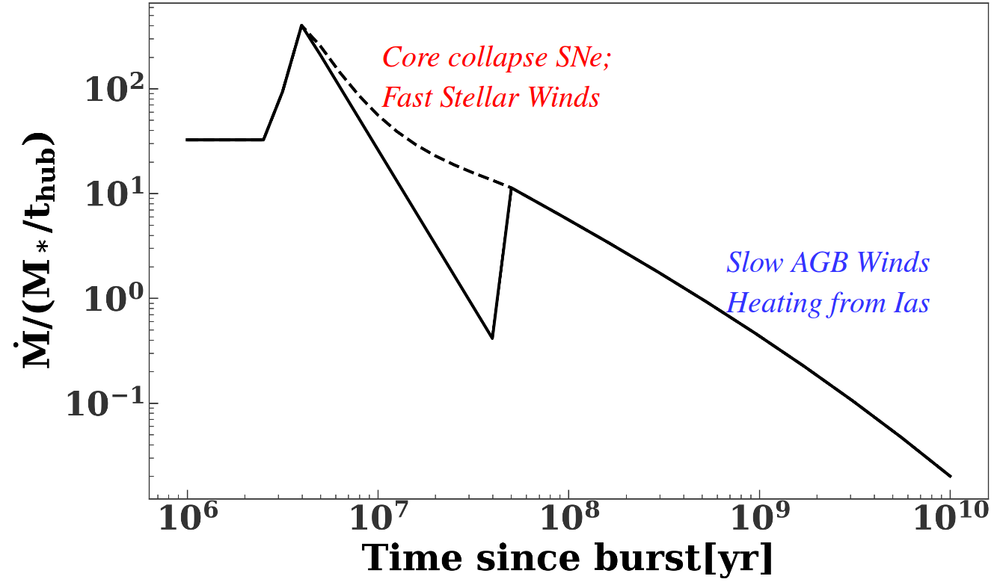

Journey to the Galactic Center
Journey to galactic center

Introduction to TDEs

Swift-J1644

TDE radio observations

Kate Alexander
Part I: The circumnuclear medium
- Framework for gas density around quiescent SMBHs Generozov et al. 2015
-
Interpretation of TDE radio observations
Generozov et al. 2017
The circumnuclear medium
The circumnuclear medium
The circumnuclear medium
Solve for hydrodynamic profiles, assuming:
- Spherical symmetry
- Steady-state
- First applied to Galactic Center by Quataert 2004.
Profiles
Mass return rate
Stagnation radius
Density
Density
Thermal stability
If heating $\sim$ cooling, thermal instability!
Thermal stability
Assuming marginal thermal stability gives analytic estimate for the density:
$5 \left(\frac{\sigma}{100 \,{\rm km\,s^{-1}}}\right)^{4.4} \left(\frac{r}{10^{18}\ \, {\rm cm}}\right)^{-1}$ cm$^{-3}$
Summary
- $n_{18}\sim 0.1 -1000$ cm$^{-3}$
-
$n\propto r^{-\alpha}$; $\delta -1\leq \alpha\leq 1.5$
($\delta$ is the slope of the stellar density profile). - Many TDEs occur in E+A galaxies that have: $n_{18} \geq 10$ cm$^{-3}$
Jets
- Shocks
- Accelerate relativistic electrons
- Synchrotron radiation.
Jets
Simulation results
- Slow component dominates near peak at high densities/low frequencies ($n_{18}\geq 10$ cm$^{-3}$, $\nu \leq 5$ GHz)
- Viewing angle does not matter at late times.